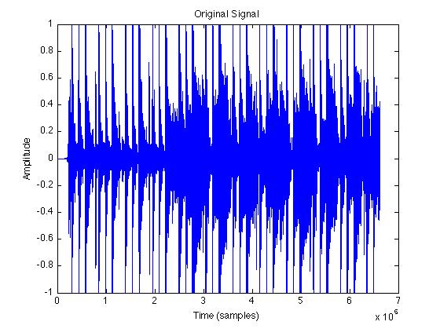
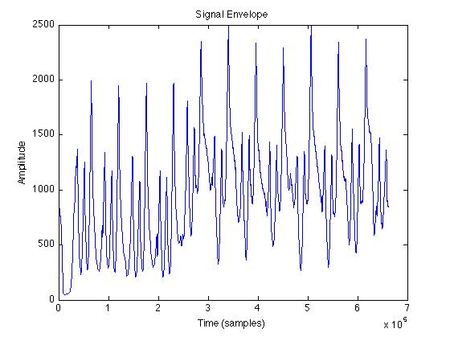
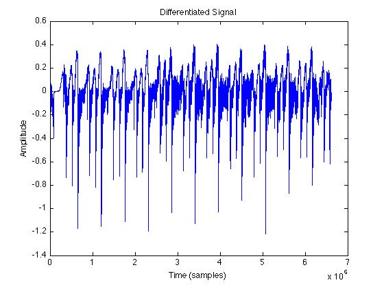
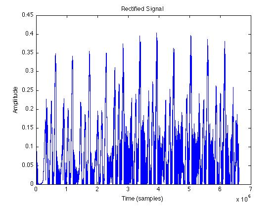
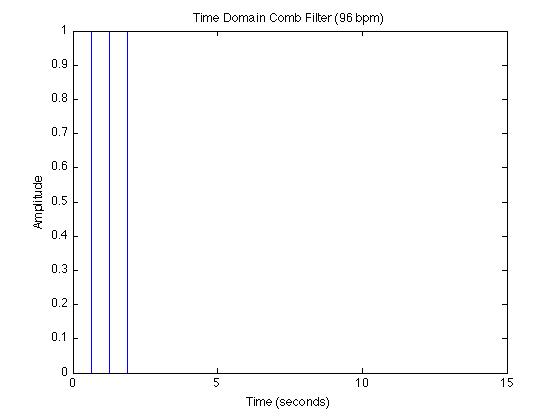
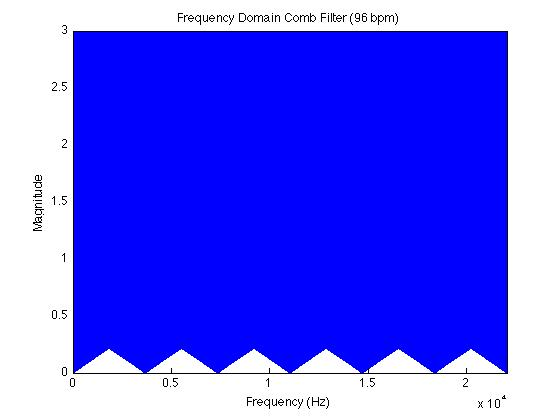
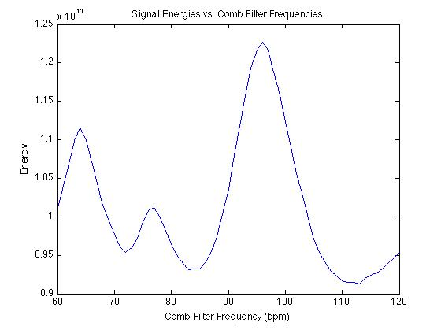

The goal of the project is to implement a Matlab-based algorithm for elementary tempo detection of audio samples. The algorithm was proposed and explained in detail by Eric Scheirer in 1997
[1]. In brief, it uses a combination of frequency domain and time domain analyses to localize and track sections of audio likely to be `downbeats' of the rhythm, and this data is combined to approximate the tempo of the piece.
This algorithm works through a series of steps that effectively reveal the strongest periodic amplitude fluctuations present in the signal. The first steps (envelope extraction, differentiation, rectification) serve to simplify the signal's overall amplitude trends, and the last step (comb filtering) determines the most likely tempo of the simplified signal.
The algorithm can be implemented with an initial separation of frequency bands in the signal, serving to `catch' the strongest rhythm from various instruments. This operation emulates the apparent cross-band rhythmic integration that Scheirer hypothesizes is performed by the human auditory system. In this implementation, this separation is optional.
Following this step, the amplitude envelope of the signal is calculated and smoothed, and this envelope is treated as the signal in the following steps. The reason this is satisfactory is because the algorithm depends on the large-scale amplitude trends within the signal.
Next, the signal is differentiated and half-wave rectified, yielding a ``sharper'' signal with regard to amplitude peaks. The details of these steps are quite mathematically complex, but they serve to better reveal and isolate the ``downbeats'' of the rhythm in the signal.
Finally, to determine the tempo, the signal is compared to a bank of ``pure signals'' at specific tempos, or more specifically, comb filters defined as impulse trains with frequencies corresponding to specific tempos. Convolution with these filters yields a signal whose energy reflects the extent to which the test signal ``matches'' the filter's. This can be considered analogous to the DFT, which ``compares'' the signal to a bank of sinusoids, and the result of this comparison is a value proportional to the presence of each sinusoid within the signal. The tempo of the filter whose convolution with the test signal yields the highest energy is taken to be the tempo of the original signal.
The algorithm is implemented in a single Matlab script separated into sections corresponding to the steps described above. These sections are explained in detail below. All example plots were generated using a 15-second clip from a rock song with a well defined 4/4 beat at 96 beats per minute (wav file is included with project
source code).
Parameters
This section defines the project parameters, which can be modified to suit the desired resolution, efficiency, and more:
| `filename' |
(string) : |
name of file to be analyzed, should be .wav file, ~5-15 seconds long |
| `band_separation' |
(`yes'/`no') : |
binary argument indicating whether the signal should be separated into frequency bands at the start of the analysis |
| `halfhan_win_length' |
(float) : |
length of half-hanning window used for envelope smoothing, in seconds |
| `comb_n_impulses' |
(int) : |
number of impulses used to define comb filters that will be convolved with processed test signal |
| `tempo_min' |
(int) : |
minimum tempo to be tested, in beats per minute |
| `tempo_max' |
(int) : |
maximum tempo to be tested, in beats per minute |
| `tempo_resolution' |
(int) : |
size of step increment from tempo_min to tempo_max, in beats per minute |
Frequency Bands
First, the signal is read and converted to the frequency domain using the FFT. It is then separated into bands of various frequency ranges. If the
band_separation parameter is set to `yes', these bands are delimited as follows: 0-200 Hz, 200-400 Hz, 400-800 Hz, 800-1600 Hz, 1600-3200 Hz, 3200-fs/2 Hz, where fs/2 is the Nyquist frequency. If the
band_separation parameter is set to `no', the entire signal is analyzed as one band, namely 0-fs/2 Hz. For many signals, the algorithm is just as effective without frequency band separation.
Figure 1 shows the magnitude frequency response of each frequency band when
band_separation is set to `yes'. Each of the remaining steps is performed on each of the frequency banded signals.
Figure 1: Frequency Magnitude Responses of Frequency Bands
Envelope Extraction:
The signal is converted to the time-domain using the inverse FFT, full-wave rectified, then convolved with a half Hanning window (calculated by
this definition). (This convolution is performed as multiplication in the frequency domain.) These operations serve to convert the signal into a positive-valued envelope, representing the overall amplitude fluctuations in the signal. Convolution with the half Hanning window serves to smooth this envelope, applying a sort of low-pass filter in the process. Figure 2 shows the original signal and the envelope extracted using this method.
|

Figure 2a: Original Signal in Time Domain
|

Figure 2b: Signal Envelope in Time Domain
|
Differentiation and Rectification:
The signal is then discretely differentiated, because the ``derivative-of-envelope function performs a type of onset filtering process''
[1]. Essentially, the periodic fluctuations in the signal are easier to detect from the signal's first derivative. The signal is then half-wave rectified to avoid sensitivity to onset imperfections by broadening the time-domain response to perceptual attacks
[1]. The reason for this step is more intuitively understood when observing the time domain signal after differentiation and rectification, shown in Figures 3 and 4 respectively.
|

Figure 3: Differentiated Time Domain Signal
|

Figure 4: Rectified Time Domain Signal
|
Comb Filtering:
Next, a filter-bank is created, containing one comb filter for every tempo from
tempo_min to
tempo_max in intervals of
tempo_resolution. These comb filters are defined as time domain impulse trains, such that the frequency of impulses in filter `i' is proportional to the i'th tempo being tested. Figure 5 shows one such comb filter.
|

Figure 5a: A Comb Filter (Time Domain)
|

Figure 5b: A Comb Filter (Frequency Domain)
|
The signal is convolved with each of these comb filters (performed as multiplication in the frequency domain), and the energy of the resultant signal is calculated (the energy values for each frequency band are summed). Figure 6 shows the energy of the convolution product for a range of comb filters corresponding to possible tempos.

Figure 6: Energy of Convolution Product of Signal and Comb Filterbank
The tempo associated with the filter that yields the maximum energy is taken to be the tempo of the original signal. In this case, the global maximum lies at 96 bpm, and that is the tempo of the audio sample.